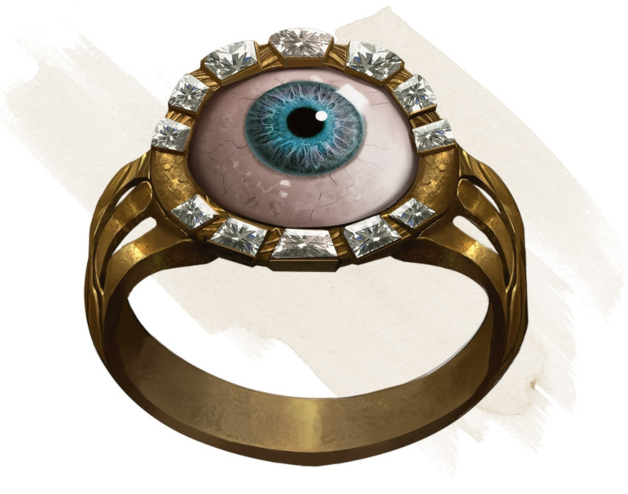

Anneau de rayons X
Anneau, rare (nécessite un lien)
Tant que vous êtes équipé de cet anneau, vous pouvez utiliser une action pour prononcer son mot de commande. Lorsque vous le faites, vous pouvez voir à l'intérieur et au travers des matières solides pendant 1 minute. Cette vision possède un rayon de 9 mètres. Pour vous, les objets solides se trouvant dans ce rayon vous semblent transparents et n'interdisent pas à la lumière de les traverser. Cette vision peut pénétrer jusqu'à 30 centimètres de pierre, 2,50 centimètres de métal commun ou jusqu'à 90 centimètres de bois ou de terre. Des substances plus denses bloquent la vision, comme le ferait une fine feuille de plomb.
À chaque fois que vous utilisez de nouveau cet anneau avant de prendre un repos long, vous devez réussir un jet de sauvegarde de Constitution DD 15 sous peine de subir 1 niveau d'épuisement.
À chaque fois que vous utilisez de nouveau cet anneau avant de prendre un repos long, vous devez réussir un jet de sauvegarde de Constitution DD 15 sous peine de subir 1 niveau d'épuisement.
Dungeon Master´s Guide (SRD)
